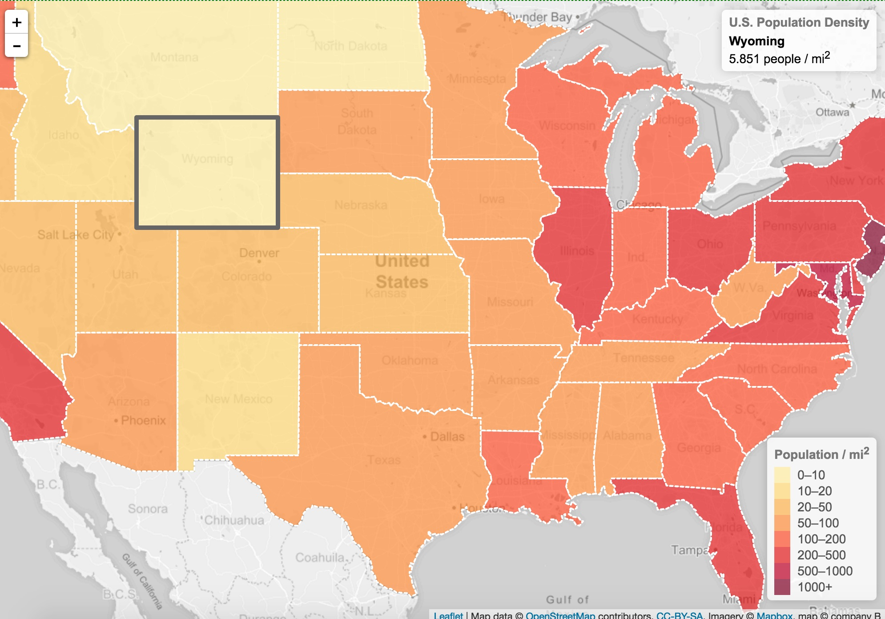

Leaflet: A Kinder, Simpler Web Mapping API

"Leaflet is simply the best option for working with the display of points, symbols, and all types of features on web and mobile devices" (Pepple, 2015)
Technology at a Glance
First-Look Prototypes
Leaflet Choropleth Map of U.S. Population Density
<<
>>